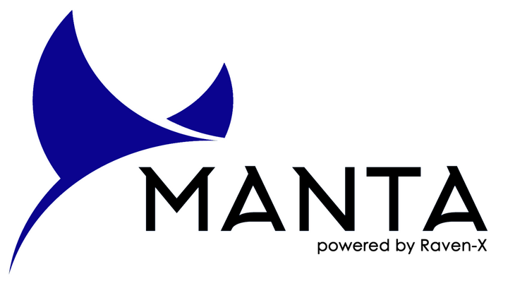

References
DOOS (Deep Ocean Observing Strategy) (2016). DOOS 2016 Workshop Proceedings.
DOOS (Deep Ocean Observing Strategy) (2018). Science and Implementation Guide.
International Organization for Standardization (ISO) (2017). Underwater acoustics—Terminology. ISO/DIS 18405.2:2017. Geneva, Switzerland.
Martin, S.B., Gaudet, B.J., Klinck, H., Dugan, P.J., Miksis-Olds, J.L., Mellinger, D.K., Mann, D.A., Boebel, O., Wilson, C.C., Ponirakis, D.W. and Moors-Murphy, H. (2021). Hybrid millidecade spectra: A practical format for exchange of long-term ambient sound data. JASA Express Letters, 1(1), p.011203., https://doi.org/10.1121/10.0003324
Merchant, N.D., Fristrup, K.M., Johnson, M.P., Tyack, P.L., Witt, M.J., Blondel, P. and Parks, S.E. (2015). Measuring acoustic habitats. Methods in Ecology and Evolution, 6(3), pp.257-265.,https://doi.org/10.1111/2041-210X.12330
Miksis-Olds, J.L., Martin, B., and Tyack, P.L. (2018). Exploring the ocean through soundscapes. Acoustics Today, 14, 26-34., https://acousticstoday.org/wp-content/uploads/2018/03/Exploring-the-Ocean-Through-Soundscapes.pdf